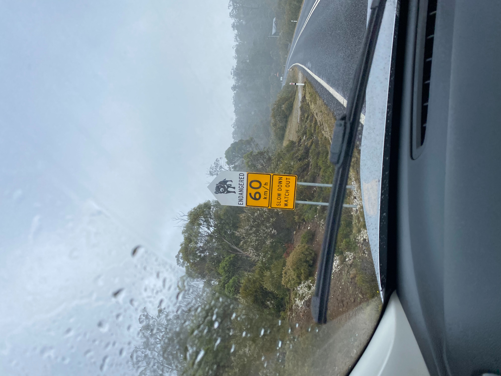
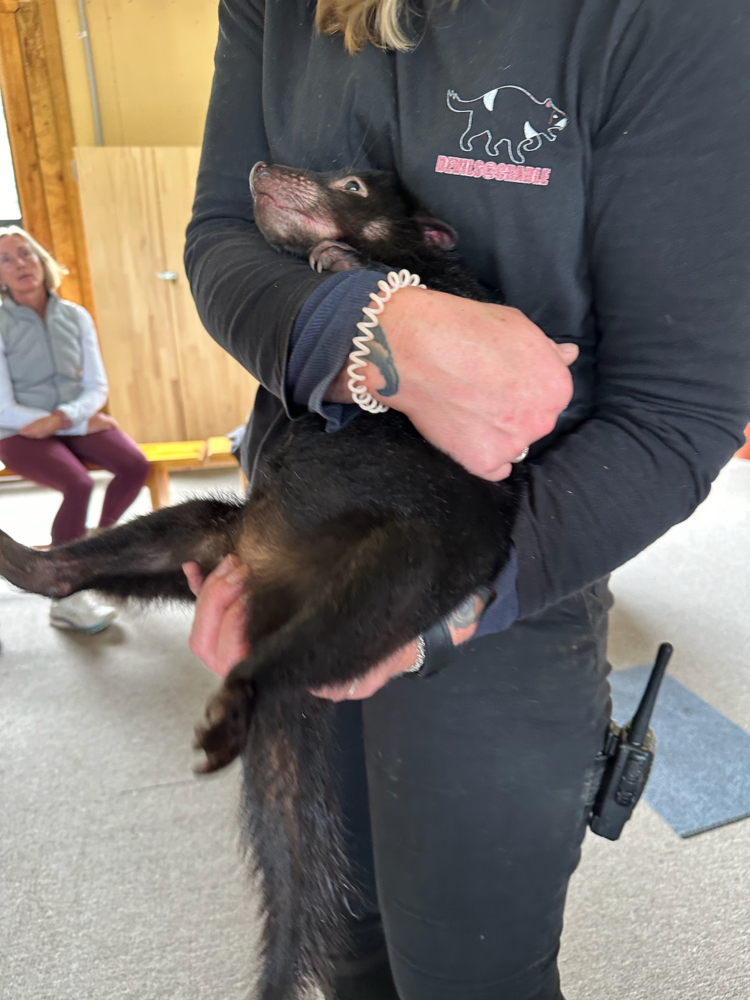
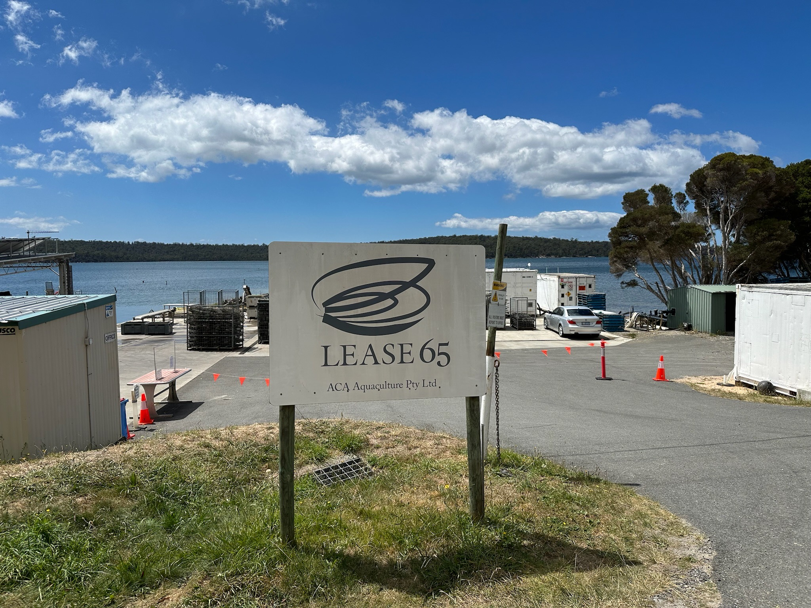
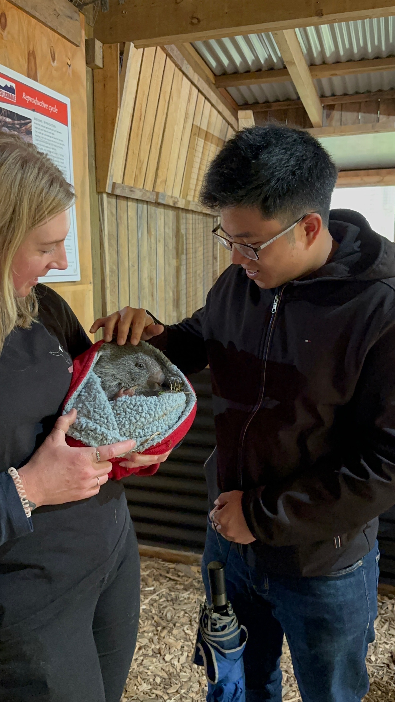
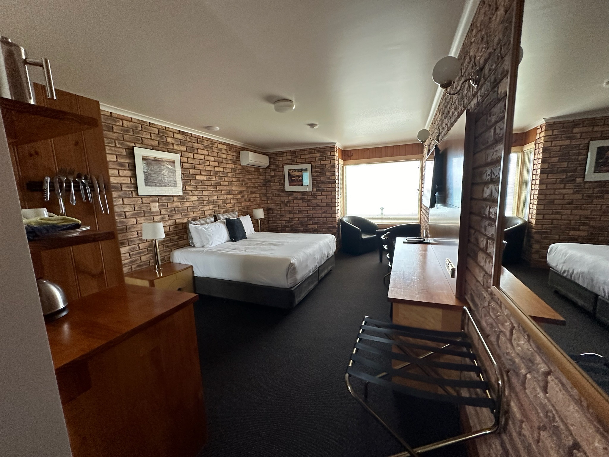
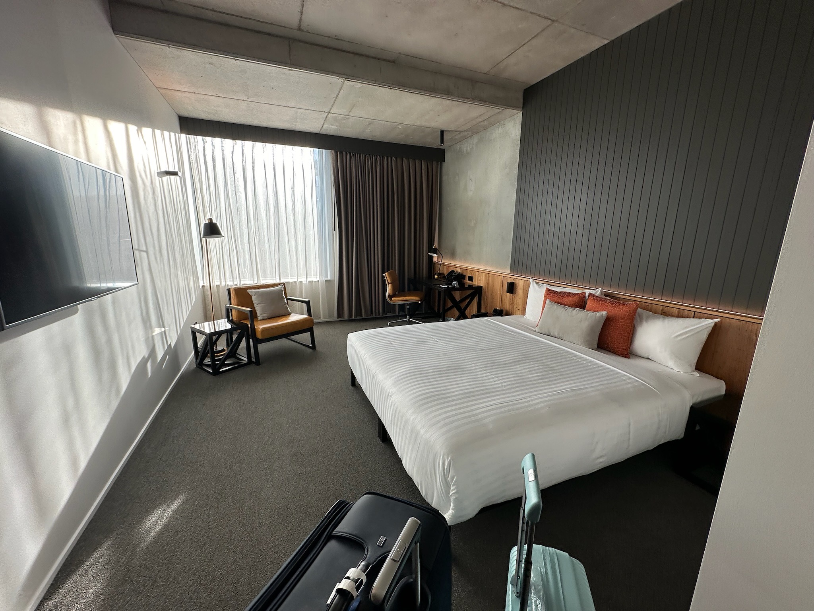
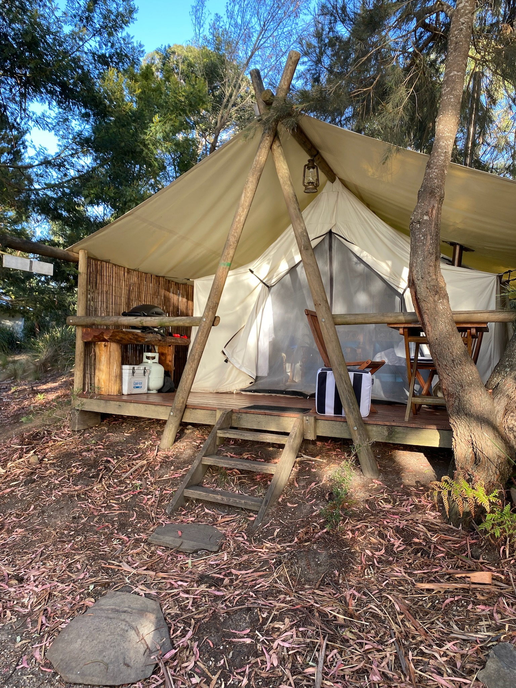
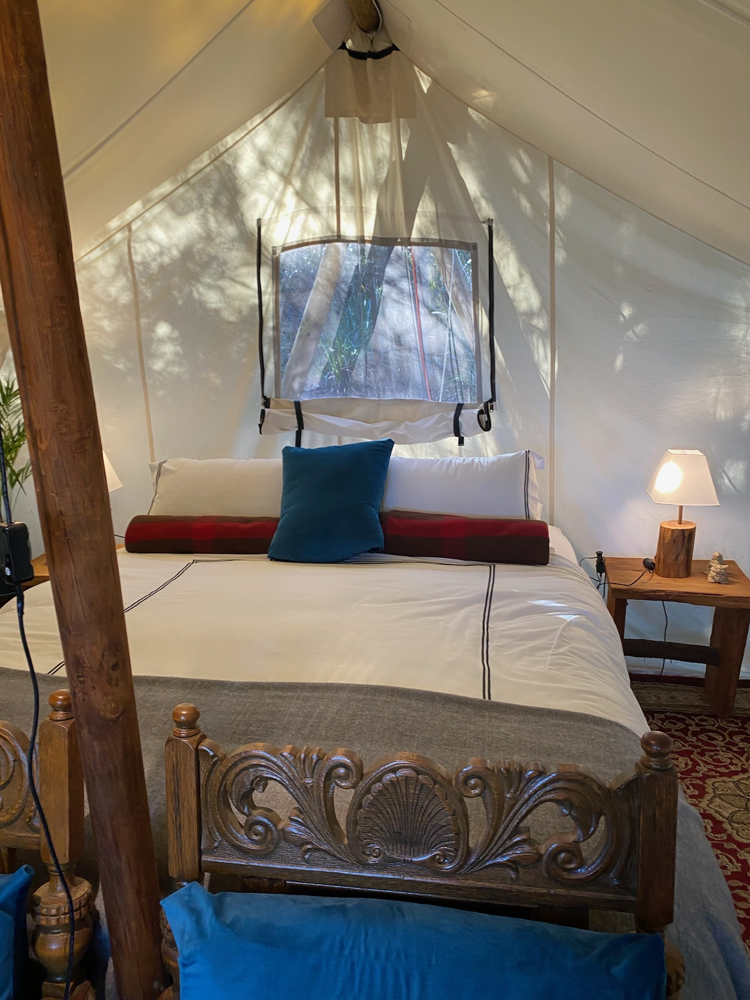
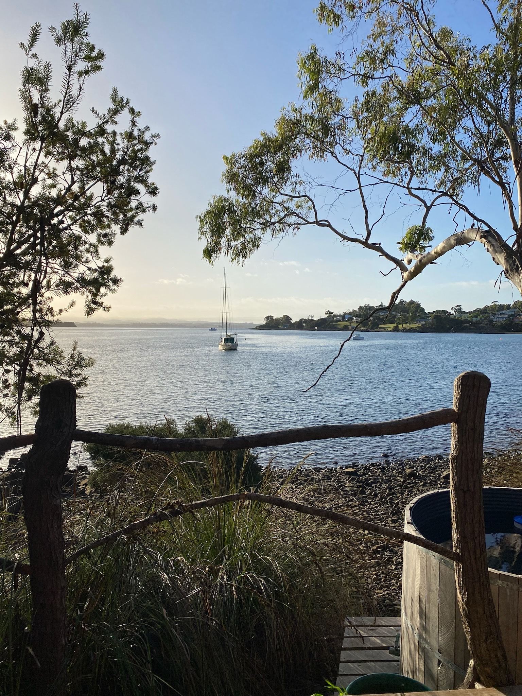
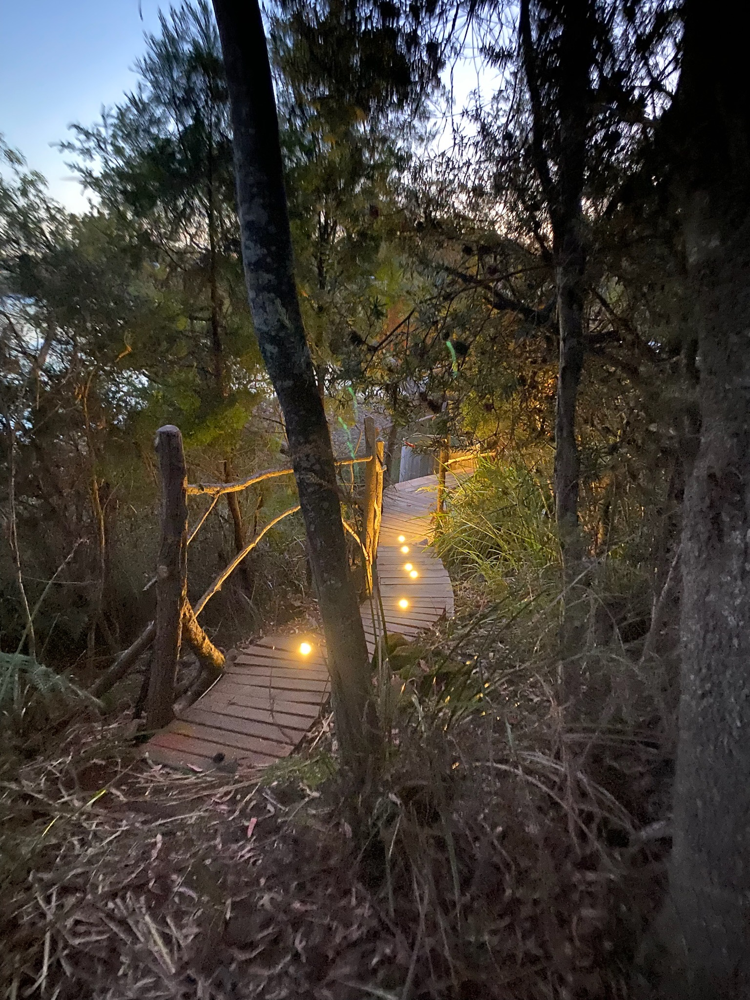

Trip to Tasmania
The Journey Begins
是一場說走就走的旅行(甚至是暑期實習的時候在辦公室訂的機票)。塔斯馬尼亞，好似我們對紐西蘭皇后鎮的印象，是地球上最好的幾個秘境。而且這裡是超級可愛的Tasmania Devil的家園，甚至有地方可以摸!

Travel Plan
Day 1
- 抵達Launceston機場(北邊的機場)
- 取車Bargain，特別有趣的一點是這家的取車點在機場對面，但是必須搭接駁車過去，走路是走不到的。(至於為什麼是它家，因為便宜阿哈哈哈)
- 前往41 South Tasmania and Georgie's Cafe。有一隻很友善的牧羊犬，以及有名的鮭魚養殖參觀行程。這裡沒有訊號，也是一個很好強迫你靜下來的地方。
- 第一天的另一個重中之重，就是前往Trowunna看Tasmania Devil以及Wombat。印象中，接線阿姨不太友善(應該就是門口那個)，但是解說員超級讚。我們也是在這裡才發現澳洲的Quoll(東袋鼬)超級可愛!
- 入住Stanley Village Waterfront (因為聽說這裡可以看到野生小企鵝走在街上)。實際上呢，我們只看到兩隻小企鵝很艱難的從岸邊石頭堆慢慢往上移動。
- 晚餐吃Stanley Hotel Bistro
Day 2
- 前往旁邊的海中巨岩搭乘The Nut Chair Lift (return tickets: AUD19 pp)
- Jimmy Lane Memorial Lookout與大相框合照。
- 前往搖籃山(Cradle Mountain)的Devils@Cradle，路程相對遙遠。許多人前往搖籃山的目的是步行登山，不過我們直衝向超可愛的devils。
- 4-5pm是我們預約的Joey Encounter私人導覽，價錢非常合理，大推大推。
- 摸完小動物們後，驅車回到Launceston市中心
- 入住Hotel Verge Launceston
Day 3
- Launceston市區閒逛
- 前往Bridestowe Lavender Estate吃薰衣草冰淇凌，抵達這天薰衣草已經所剩無幾，不太推薦這時間來。
- 前往購買晚上露營的食物
- 入住Wingtons Glaming，一個坐落河邊的豪華帳棚營地。
Day 4
- 回程開回Lauceston市中心，經過了酒類的觀光中心，稍微停留了一下就繼續前往市中心。
- 搭飛機回Melbourne!
Highlights
Samphire真的是一間超讚的飯店。島上有其他選項，也有glamping的選項，不過我們相當喜歡Samphire的體驗，價格甚至不貴!第一天的中餐跟晚餐都在Isola吃的，非常厲害的餐廳，龍蝦油烤大蝦以及神奇的豬五花，大推!



Where We Stayed
Day 1 - Day 2: Stanley Village Waterfront
Day 2 - Day 3: Hotel Verge Launceston
Address: 50 Tamar Street, Launceston
Day 3 - Day 4: Wingtons Glamping
挑戰了一晚住帳棚，豪華glamping。




Travel Tips
Devil的愛: 如果你身上有炸雞的味道，他們會很愛你。
Glamping:食物藥包好，不然負鼠來了就不嘻嘻了。
Final Thoughts
這篇心得是我的個人網頁試營運階段寫的，希望能夠帶給讀者一點幫助，也是為自己紀錄美好的回憶。未來會逐步回來補上缺失的部分，還請讀者多多包容。